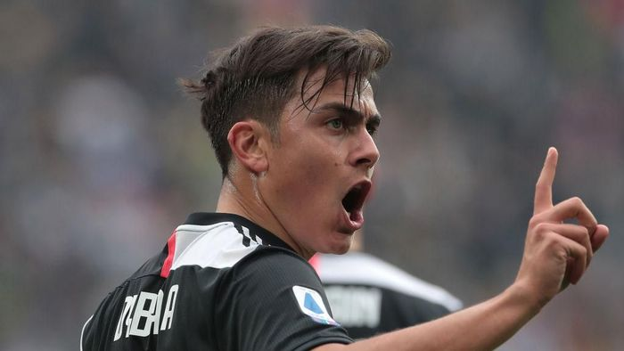

Dybala Akui Didekati MU, Tottenham, dan PSG Musim Lalu

Sumber :https://www.detik.com/
Paulo Dybala mengaku dirinya diincar banyak klub musim lalu. Manchester United, Tottenham Hotspur, dan Paris Saint-Germain mendekati penyerang Juventus itu.
Musim lalu, rupanya Dybala nyaris dibuang Juventus. Penyerang Argentina itu masuk dalam daftar jual Bianconeri
"Kurang lebih tahun lalu, ketika Juventus tidak menginginkan saya, ketika tidak ingin saya lanjut bermain di sini," kata Dybala kepada CNN.
"Saat itulah saya dihubungi dan ada beberapa klub yang tertarik kepada saya. Di antaranya Manchester United dan Tottenham Hotspur. Saya pikir untuk beberapa saat akan ada pembicaraan, kemudian Paris Saint-Germain juga datang."
Dybala menegaskan, dirinya bertekad bertahan bersama Juventus. Sampai akhirnya dirinya tetap berseragam Si Nyonya Tua dan bangkit bersama Maurizio Sarri, di mana musim ini ia sudah mencetak 13 gol.
"Saya tidak berbicara langsung dengan mereka, tapi ada pembicaraan dengan klub. Saya sendiri niatnya bertahan. Penampilan saya biasa saja dalam enam bulan terakhir. Saya tak ingin pindah dengan citra seperti itu, sebab klub sudah memberi banyak momen indah, kurang adil rasanya," jelasnya.
"Jadi saya bilang ingin bertahan, berkembang, dan memberikan yang terbaik. Tidak mudah, karena niat Juventus sebaliknya. Namun, setelah bursa ditutup, tidak ada waktu lagi, dan datangnya Sarri membuat saya berkembang. Tim mulai bermain lebih baik, dan saya pun bertahan dan tampil bagus," ungkapnya.
kembali


 Copyright@2020
Copyright@2020